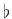

Musical MIDI Accompaniment, MMA1.1, generates standard MIDI1.2 files which can be used as a backup track for a soloist. It was written especially for me--I am an aspiring saxophonist and wanted something to practice my jazz solos. With MMA I can create a track based on the chords in a song, transpose it to the correct key for my instrument, and play my very bad improvisations until they get a bit better.
I also have a small combo group which is always missing at least one player. With MMA generated tracks we can practice and perform even if a rhythm player is missing. This all works much better than I expected when I started to write the program.
The program MMA was written and is copyright Robert van der Poel, 2002--2004.
This program, the accompanying documentation, and library files can be freely distributed according to the terms of the GNU General Public License (see the distributed file ``COPYING'').
If you enjoy the program, make enhancements, find bugs, etc. send a note to me at bvdp@uniserve.com; or a postcard (or even money) to PO Box 57, Wynndel, BC, Canada V0B 2N0.
The current version of this package is maintained at: http://mypage.uniserve.com/~bvdp/mma/mma.html.
This document reflects version 0.12 of MMA.
|

|
MMA is a Python program developed with version 2.3 of Python. At the very least you will need this version (or later) of Python!
To play the MIDI files you'll need a MIDI player. Pmidi, tse3play, and many others are available for Linux systems. For Windows and Mac systems I'm sure there are many, many choices.
You'll need a text editor to create input files.
MMA consists of a variety of bits and pieces:
The script ``install'' will (hopefully) install MMA properly for you. It assumes that main script is to be installed in /usr/local/bin and the support files in /usr/local/share/mma. If you want an alternate location, you can edit the paths in the script. The only supported alternate to use is /usr/share/mma.
In addition, you can run MMA from the directory created by the untar. This is not recommended, but will show some of MMA's stuff.
You should be ``root'' to run the install script.
For details on the command line operations in MMA please refer to chapter 2.
To create a MIDI file you need to:
mma myfile <ENTER> |
will invoke MMA and, assuming no errors are found, create a MIDI file ``myfile.mid''.
An input file consists of the following information:
Items 1 to 3 are detailed later in this manual. Please read them before you get too involved in this program.
We do believe that proper indentation, white space and comments are a good thing. But, in most cases MMA really doesn't care:
Each line is initially parsed for comments. A comment is anything following a ``//'' (2 forward slashes).1.4
Comments are stripped from the input stream. Lines starting with the Comment directive are also ignored. See the Comment discussion for details ( ).
).
To understand how MMA works it's easiest to look at the initial development concept.Initially, a program was wanted which would take a file which looked something like:
Tempo 120 |
and end up with a MIDI file which played the specified chords over a drum track.
Of course, after starting this ``simple'' project a lot of complexities developed.
First, the chord/bar specifications. Just having a single chord per bar doesn't work--many songs have more than one chord per bar. Second, what is the rhythm of the chords? What about a bass line? Oh, and what drum track?
Well, things got more complex after that. At a bare minimum, we needed the ability to:
From these simple needs MMA was created.
The basic building blocks of MMA are Patterns. A pattern is a specification which tells MMA what notes of a chord to play, the start point in a bar for the chord/notes, and the duration and the volume of the notes.
MMA patterns are combined into Sequences. This lets you create multi-bar rhythms.
A collection of patterns can be saved and recalled as Grooves. This makes it easy to pre-define complex rhythms in library files and incorporate them into your song with a simple two word command.
MMA is bar or measure based (we use the words interchangeably in this document). This means that MMA processes your song one bar at a time. The music specification lines all assume that you are specifying a single bar of music. The number of beats per bar can be adjusted; however, all chord changes must fall on a beat division (the playing of the chord or drum note can occur anywhere in the bar).
To make the input files look more musical, MMA supports Repeats and RepeatEndings. However, complexities like D.S. and Coda are not internally supported (but can be created by using the Goto command).
Just about everything in a MMA file is case insensitive.
This means that the command:
Tempo 120 |
could be entered in your file as:
TEMPO 120 |
or even
TeMpO 120 |
for the exact same results.
Names for patterns, and grooves are also case insensitive.
The only exceptions are the names for chords, notes in Solos, and filenames. In keeping with standard chord notation, chord names are in mixed case; this is detailed in Chapter 8. Filenames are covered in Chapter 20.